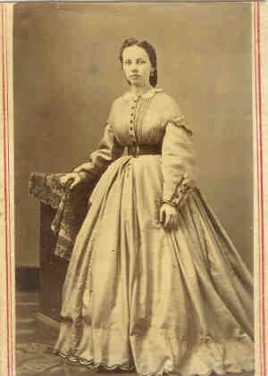

|
|
| 
Odelia Julia BONNE (1847-1899) |
Odelia Julia BONNE
General Notes: No "Bonne" in 1860 Mississippi census; probably emigrated from Germany after that date but before 1865. 1870 census states born in Prussia. 1880 census states father and mother born in Germany. Noted events in her life were: • Census, 14 Jun 1870, Vicksburg, Warren Co., Mississippi. 3445 • Census, 1880, Vicksburg, Warren Co., Mississippi. 3444 Odelia married Wilhelm MÜLLER, son of MÜLLER and VON HAMMERSTEIN-LOXTON, on 6 Jul 1865 in Vicksburg, Warren Co., Mississippi. (Wilhelm MÜLLER was born on 4 Dec 1846 in Freren, , Niedersachsen, Germany,281,3446 died on 31 Dec 1921 and was buried in Saint Louis, St. Louis City, Missouri.) |
|
only search Stockdale Coddington Genealogy |
Table of Contents | Surnames | Name List
This website was created 9 Apr 2025 with Legacy 10.0, a division of MyHeritage.com; content copyrighted and maintained by coddgenealogy at gmail d0t com